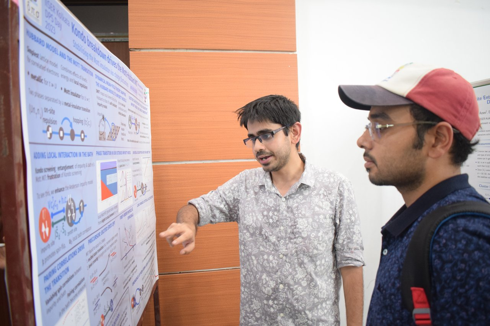

Key animation of the Levi vs Kenny-squad scene by Arifumi Imai, in the anime Attack on Titan
Key animation of the Levi vs Kenny-squad scene by Arifumi Imai, in the anime Attack on TitanI am a research scholar at the Indian Institute of Science Education and Research Kolkata (IISER Kolkata), living in Kalyani, West Bengal, India. I work in theoretical condensed matter physics, and am a part of the Emergent Phenomena and Quantum Matter (EPQM) group. I study various topics in the field of strongly correlated materials.
 Poster presentation IISER Kolkata’s DPS Day (2023)
When I am not working, I enjoy catching up on the seasonal anime. Although I am not particularly picky when it comes to the genres of the anime I watch, I do enjoy slice of life shows and thrillers the most. From time to time, I also pick up crime novels. Whenever I get some time, I dabble in Jekyll, Python and shell scripting, and try out new Linux distributions - I am quite passionate about ricing my desktop.
Key animation of the Levi vs Kenny-squad scene by Arifumi Imai, in the anime Attack on Titan
I used to love watching and playing football during my school years. Nowadays I am mostly a seasonal fan. I am part of a group named Projectyl that helps undergraduate and graduate students in finding and applying for short projects and internships in India, with the goal of making it easier for them to transition into their research programs. Feel free to check out our work if you are interested in landing a summer or winter project in physics. Hit me up if you want to be a part of the group.